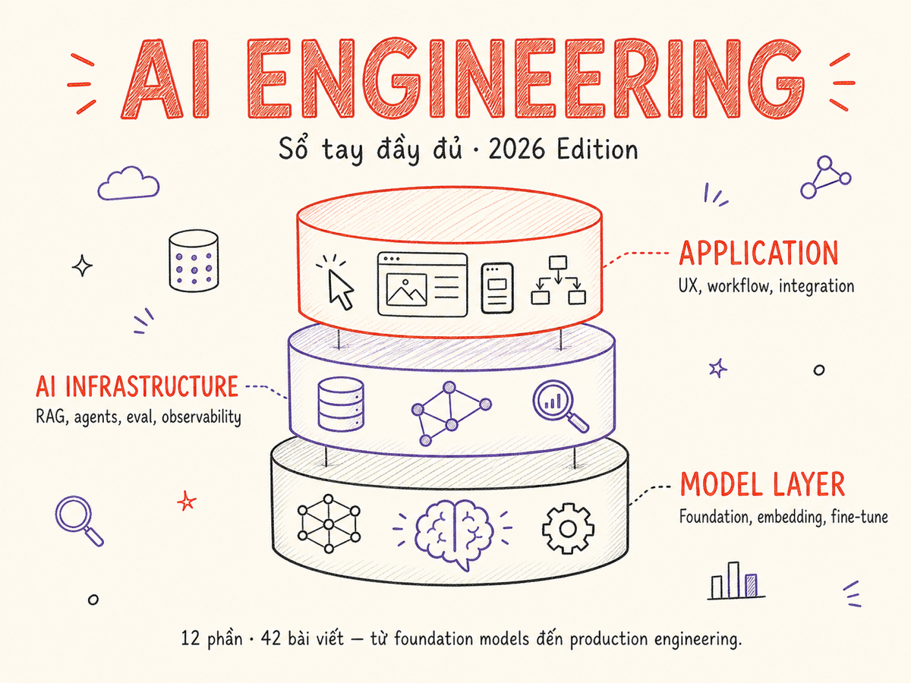

AI Engineering — Sổ tay đầy đủ
Dành cho software engineer muốn xây dựng sản phẩm AI — từ nền tảng foundation models, RAG, agents, đến production engineering. Có thể đọc tuyến tính hoặc nhảy thẳng vào phần cần thiết.

Giới thiệu
AI Engineering là ngành kỹ thuật tập trung vào việc xây dựng sản phẩm và hệ thống sử dụng foundation models — không phải nghiên cứu hay huấn luyện model từ đầu. Đây là một discipline mới xuất hiện sau làn sóng ChatGPT, khi một software engineer bình thường có thể tích hợp năng lực AI vào sản phẩm chỉ qua API.
Năm 2026, AI Engineering đã trưởng thành thành một lĩnh vực có lộ trình rõ ràng: từ cách chọn model phù hợp, xây dựng pipeline RAG, thiết kế agent, đến vận hành hệ thống AI ở quy mô production. Ecosystem xung quanh — vector database, observability, eval framework, prompt management — đã đủ chín để xây dựng sản phẩm nghiêm túc.
Series này dành cho ai? Lập trình viên đang hoặc sắp build sản phẩm AI — không cần background ML sâu, chỉ cần biết lập trình và muốn hiểu cách làm đúng. Mỗi bài kết hợp lý thuyết vừa đủ với ví dụ thực tế và quyết định thiết kế cụ thể.
Cách đọc: Nếu mới bắt đầu, đọc Phần 1 → 2 theo thứ tự để xây nền tảng. Nếu đã có kinh nghiệm, nhảy thẳng vào phần bạn cần — mỗi bài có thể đọc độc lập. Cuối trang có gợi ý lộ trình theo từng mục tiêu cụ thể.
Track nâng cao (Phần 9–12): Sau khi nắm Phần 1–8, các phần advanced đi sâu vào Agent Engineering (design patterns, harness, memory, durability, eval, orchestration), AI Security (prompt injection deep-dive, agent threats, sandboxing, red-team, privacy, compliance), Advanced Eval & Quality (dataset design, reward modeling, continuous eval), và Production Patterns 2026+ (inference-time scaling, computer-use agents, code execution, distributed runtime, edge AI).
Nền tảng (Foundations)
Làm việc với Models
Data Engineering cho AI
Augmentation Patterns
Production Engineering
Application Architecture
Operations & Team
Tương lai & Nâng cao
Agent Engineering (chuyên sâu)
AI Security (chuyên sâu)
Advanced Eval & Quality
Production Patterns 2026+
Bắt đầu từ đâu?
Chọn lộ trình phù hợp với mục tiêu của bạn